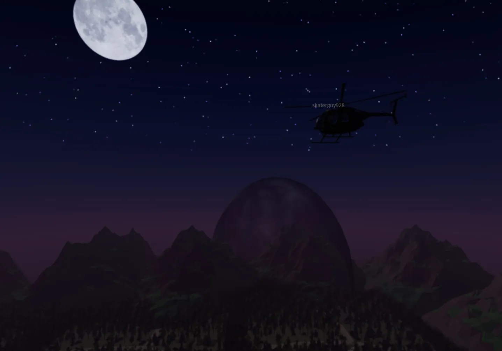
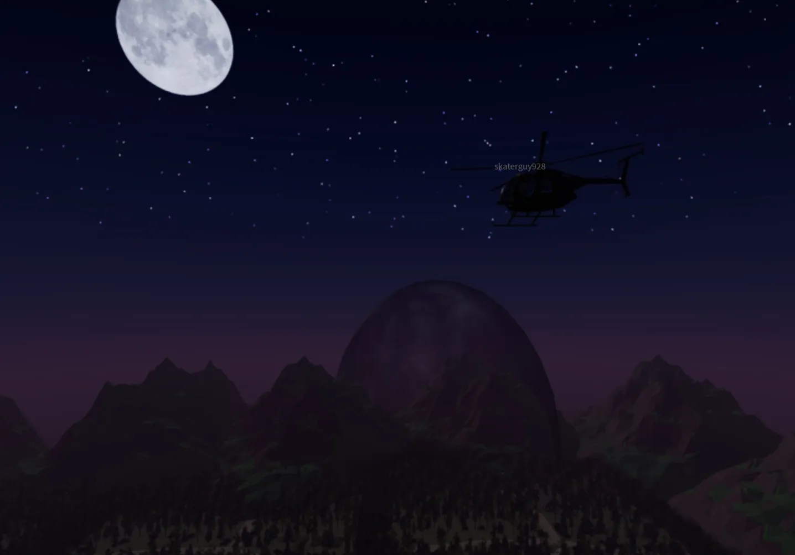

Behind the Scenes
A look into the passion and creative process behind my GAME project
Dynamic Day and Night Cycle
I coded a dynamic day and night cycle in my roblox game using Lua. At sunset, the monster wakes up and begins hunting the player, and I also coded in a heartbeat and footstep audio loop which gets faster as the monster gets closer to you which creates a pretty tense and immersive experience.
Monster Behavior
The monster uses my custom lua script to align its actions with the day and night cycle. At night, it wakes and hunts the player, adding a survival element to the game.
Dynamic Stamina Bar
For a little more tension and realism, I created a dynamic stamina bar that gets lower as the player runs, which makes for more strategic movement.
Game Media
Check out some screenshots and panoramas of the game setting below:
 
